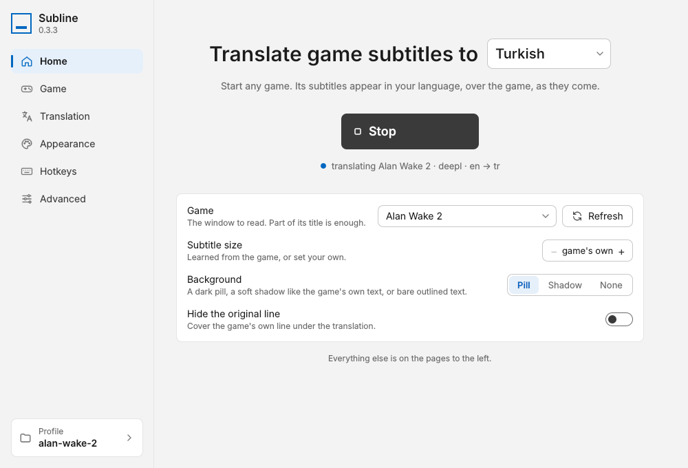

Works with any windowed game
Any game in windowed or borderless mode. Capture uses Windows Graphics Capture, so only the game window is read, never your other apps.
Free and open source · Windows 10 & 11
Subline reads a game's subtitles off the screen and shows them translated, right where the originals were, about half a second after each line appears. No mods, no game files, no account.
How it works
Open Subline, choose the language you want and the game window. Paste a free DeepL key once, or use the offline translator with no key at all.
Press Ctrl+Shift+A in the game and drag a box over the subtitles. Subline remembers it for that game, even when you change resolution.
Each new line is read, translated and drawn over the original in about half a second. Lines the game repeats appear instantly.
Features
Any game in windowed or borderless mode. Capture uses Windows Graphics Capture, so only the game window is read, never your other apps.
One steady size and colour, learned from the game's own text. A dark pill, a soft shadow or bare outlined text, in any font on your PC.
Translators see the recent lines, so names, pronouns and tone stay consistent. Speaker names like “Casey:” stay as the game printed them.
A per-game cache answers repeated lines instantly, without spending your DeepL characters or Claude tokens.
Text is read only when something in the subtitle area changes, so a still scene costs nothing. A subtitle strip takes about 50 ms on the CPU.
Tray icon, global hotkeys and per-game profiles that load on their own. The overlay hides when the game isn't in front.
Translators
Switch at any time. Your keys are stored in Windows Credential Manager, never in a file.
~0.2 s per line
Fast and natural, especially for European languages and Turkish.
Free API plan: 500,000 characters a month
~0.9 s per line
Follows your glossary and tone notes, keeps characters consistent, and can translate a game's whole script up front.
Pay per use with your own API key
~0.02 s per line
Runs entirely on your PC. Strong on short lines, weaker on long ones. A one-time download per language pair.
Free, and nothing leaves your PC
Draft mode: show a fast offline or DeepL translation at once, then swap in the better one when it arrives. Speeds measured English to Turkish on a desktop PC.
The app

Pick a language and a game, press Start. Everything a player needs is on one page.
Languages
Subline reads subtitles in English and most other Latin-script languages, Chinese, Japanese, Korean, Russian and other Cyrillic-script languages, and Arabic. It translates them into:
The offline translator covers the language pairs that have an offline model.
Hotkeys
| CtrlShiftA | Select the subtitle area |
| CtrlShiftT | Start or stop translating |
| CtrlShiftP | Pause and hide translations |
| CtrlShiftR | Read the screen afresh |
| CtrlShiftS | Open settings |
Change any of them on the Hotkeys page.
Privacy
Subline downloads its text-recognition models on first run (about 20 MB), and the offline model if you choose it.
%APPDATA%\gametl.Download
The latest release, built from the public source by GitHub Actions.
Installs for your user only, with no administrator prompt. Adds a Start menu entry and an uninstaller.
Download installerWindows installer (.exe)
The same app without an installer. Unzip the folder anywhere and run gametl.exe.
Portable folder (.zip)
Subline isn't code-signed yet, so Windows SmartScreen may warn about an unknown publisher. Choose More info, then Run anyway. The full source is on GitHub, and every release is built from it.
FAQ
Yes. Subline is free and open source under the MIT licence: no trial, no premium version, no ads. The only possible cost is the translation service you pick. DeepL's free plan covers 500,000 characters a month, Anthropic bills Claude per use, and the offline translator is free.
Any game that shows its subtitles as text on screen and runs in windowed or borderless-window mode. Exclusive fullscreen can't be captured or drawn over, but most games offer a borderless option in their display settings.
No. Subline reads the game window the way a screen recorder does and draws its translation in a separate, click-through window on top. It doesn't touch game files or memory. Online games set their own rules about overlays, so check them if in doubt.
A display capture (such as OBS Display Capture) includes it, so viewers see the translation too. A game or window capture records the game alone. To keep the overlay out of every capture, turn on Keep the overlay out of recordings on the Game page.
Hardly. Subline reads the screen only when something in the subtitle area changes, so a still scene costs nothing, and reading a subtitle strip takes about 50 ms on a desktop CPU. Translation happens on a separate thread and never holds anything up.
Keys are stored in Windows Credential Manager, protected by your Windows account, and sent only to DeepL or Anthropic. They are never written into a settings file.
On the Advanced page, choose Remove all data and quit. That deletes Subline's folder and its saved keys. Then uninstall it from Settings › Apps › Subline, or delete the portable folder. That's everything Subline keeps.
Open an issue on GitHub. A note of the game, the languages and the translator helps.